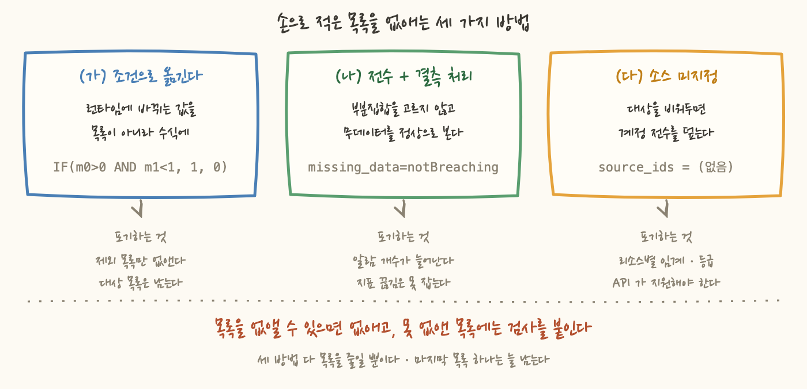
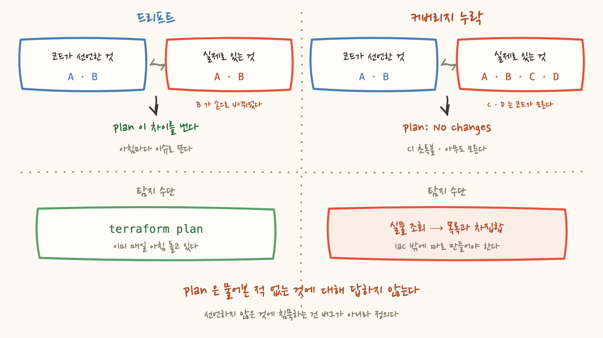

알람을 걸 때마다 커밋 메시지에 "전수에 건다"고 적었어요. VPN 전수, Aurora 전수, ASG 전수. 좋은 말이죠. 빠뜨린 게 없다는 뜻이니까요.
그런데 이틀 동안 세 번, 전수가 아니었다는 걸 발견했습니다. 세 번 다 발견 경위가 똑같았어요. 코드를 짜다가 목록을 채우려고 실물을 조회해봤는데, 개수가 달랐습니다. 언제나 알고 있던 것보다 많았고요.
이 글은 그 세 번을 나열하는 글이 아니에요. 손으로 적은 목록을 어떻게 없앨 수 있는지, 그리고 끝내 없애지 못한 목록에는 무엇을 붙여야 하는지에 대한 글입니다.
순서대로 적으면 이렇게 됩니다. 셋 다 알람을 새로 거는 작업이었고, 셋 다 "대상 목록"을 코드에 적는 단계에서 터졌어요.
VPN 은 머릿속에 "세 세트쯤"이라고 들어 있던 숫자였어요. 애초에 세어본 적이 없었던 거죠. Aurora 는 더 구체적으로 틀렸습니다. 한 클러스터 두 대만 보고 알람을 짜고 있었는데, 인스턴스를 전부 나열해보니 여섯 클러스터 열세 대였어요. 열한 대가 아무 감시도 없이 돌고 있었습니다.
ASG 는 성격이 조금 달라요. 계정에 열두 개가 있었고, 그중 열한 개는 그룹 지표 수집이 꺼져 있어서 알람을 걸고 싶어도 걸 수가 없는 상태였습니다. 지표가 발행되지 않으니까요. 프로덕션 일곱 개의 수집을 켜고 그 일곱 개에만 알람을 걸었어요.
부끄러운 건 그 다음이에요. 세 번 다 PR 본문 "감수하는 것" 칸에 같은 문장을 적고 끝냈습니다 — "실물과 목록을 대조하는 검사가 후속 과제다." 나중 두 PR 은 아예 그 항목에 앞의 것들을 함께 묶어 적었고요. 같은 숙제를 세 번 미룬 셈이죠.
목록이 생기는 이유부터 봐야 해요. 게을러서 생기는 게 아니거든요.
알람은 리소스를 지목해야 합니다. CloudWatch 알람 하나는 네임스페이스, 지표 이름, 그리고 차원(dimension)으로 정의되는데, 차원에 들어가는 건 인스턴스 ID 같은 구체적인 값 하나예요. "prod 인 모든 DB" 같은 표현을 알람 하나에 넣을 방법이 없습니다. 그래서 코드에 ID 목록이 생기고, for_each 로 펼쳐서 리소스마다 알람을 하나씩 만들어요.
여기서 중요한 건 그 목록이 무엇이냐예요. 그건 조회 결과를 손으로 베껴 적은 것, 즉 작성 시점의 사진입니다. 리소스는 계속 늘어나는데 사진은 안 바뀌어요.
그리고 진짜 문제는 사진이 낡는다는 게 아니에요. 낡아도 아무 일도 일어나지 않는다는 것입니다.
알람이 하는 일은 "이상하면 시끄럽게 하는 것"인데, 알람 자체가 빠진 상태는 아무 소리도 내지 않아요. 빠진 알람은 자기가 빠졌다고 말하지 않습니다. 감시가 없는 상태와 문제가 없는 상태가 겉으로 똑같이 조용하거든요.
세 번 겪고 나니 목록을 적기 전에 먼저 묻게 됐어요. "이 목록, 안 만들 수는 없나?" 실제로 이틀 사이에 세 가지 방법을 썼는데, 각각 없애는 목록의 종류가 다르고 포기하는 것도 다릅니다.
ASG 전멸 알람이 그 예예요. "띄우려고 했는데 하나도 안 떠 있다"를 잡는 알람인데, 목록을 적다가 문제가 하나 나왔습니다. 의도적으로 희망 대수를 0 으로 내려둔 그룹이 둘 있었어요. 무중단 배포용 대기 슬롯 같은 것들이요. InService == 0 을 그대로 걸면 이 둘은 배포하는 순간 ALARM 이 됩니다.
쉬운 해법은 그 둘을 목록에서 빼는 거죠. 그런데 희망 대수는 런타임에 바뀌는 값이에요. 오늘 0 이어도 내일 2 로 올릴 수 있고, 그때 Terraform 목록은 이미 낡아 있습니다. 그리고 2장에서 본 대로, 그 낡음은 아무도 안 알려줘요.
그래서 목록에서 빼는 대신 수식에 넣었어요. 희망 대수가 0 보다 큰데 정상 대수가 1 미만이면 1, 아니면 0. 이렇게 두면 나중에 대수를 0 에서 2 로 올린 다음 그 그룹이 전멸했을 때 알람이 자동으로 의미를 갖습니다. 손댈 게 없어요.
원칙은 한 줄이에요. 런타임에 바뀌는 값을 Terraform 목록에 박지 않는다.
포기하는 것. 이 방법이 없앤 건 제외 목록이지 대상 목록이 아니에요. ASG 일곱 개 목록은 그대로 남아 있습니다. 그리고 단일 지표 알람이 두 지표를 쓰는 수식 알람이 되면서, 두 지표가 다 발행돼야 동작하는 알람이 됐어요. 부품이 하나 늘었다는 뜻이죠.
Aurora 복제 지연 알람이 그 예입니다. 여기엔 얼핏 명백해 보이는 최적화가 하나 있어요. 쓰기 노드는 자기 자신을 복제하지 않으니 복제 지연 지표를 발행하지 않습니다. 그러니 리더만 골라서 걸면 되고, 그러면 알람 여섯 개를 아낄 수 있어요.
그런데 그 리더 목록은 페일오버 한 번에 거짓이 됩니다. 그리고 실물을 조회해보니 이미 거짓이었어요.
어느 클러스터는 이전 페일오버 이후로 이름이 리더인 인스턴스가 실제로는 쓰기 노드였습니다. 이름이 라이터인 쪽이 리더고요. 다섯 달 넘게 그 상태였어요. 이름으로 골랐으면 어떻게 됐을까요. 지표를 발행하지 않는 쪽에 알람을 걸어 영구 ALARM 하나를 만들고, 진짜로 지연이 생길 수 있는 쪽은 사각지대로 남겼을 겁니다. 한 번의 실수로 오탐과 누락을 동시에 만드는 거죠.
그래서 열세 대 전부에 걸었어요. 대신 무데이터를 위반으로 보지 않습니다. 그렇게 안 하면 쓰기 노드 여섯 대가 배포 즉시 영구 ALARM 이 되니까요. 라이터의 무데이터는 정상이거든요.
그럼 인스턴스가 통째로 사라져서 지표가 끊기면요? 그건 이 알람이 안 잡아요. 옆에 있는 엔진 재시작 알람이 잡습니다. 그쪽은 무데이터를 위반으로 봐요.
이게 이 방법의 짝이에요. 알람 하나에 두 가지 일을 시키지 않습니다. 한 알람이 "지연이 크다"와 "노드가 사라졌다"를 동시에 판정하려 들면 둘 다 부정확해져요.
포기하는 것. 알람 개수입니다. 여섯 개면 될 걸 열세 개로 늘렸고, 그 바람에 스택 총합이 50개를 넘어 "알람이 너무 많으면 복합 알람을 검토한다"는 자체 규칙에 걸렸어요. 그리고 이 방법도 전체 목록은 여전히 손으로 적혀 있습니다. 없앤 건 "전체 중 어느 부분집합인가"라는 두 번째 목록이에요.
RDS 이벤트 구독이 그 예입니다. 페일오버나 스토리지 이슈처럼 지표가 아니라 이벤트로 나오는 것들을 받는 구독인데, 여기엔 소스를 비워둘 수 있는 옵션이 있어요. 비워두면 계정의 모든 클러스터와 인스턴스가 대상이 됩니다. 새 DB 가 생기면 자동으로 따라오고요.
목록이 진짜로 없어지는 건 이 방법뿐이에요. 앞의 둘은 목록을 줄였을 뿐이고요.
포기하는 것. 대상을 고를 수 없습니다. 개발용 DB 도 같이 와요. 리소스별로 임계나 호출 등급을 다르게 줄 수도 없고요. 그리고 무엇보다 API 가 지원해야만 쓸 수 있는 방법입니다. CloudWatch 알람에는 "이 태그가 붙은 모든 리소스" 같은 지정 방법이 없어요. 그래서 이 방법은 쓸 수 있는 자리에서만 씁니다.
세 방법이 같은 계정에 섞이면 이런 게 생겨요. 새로 만든 클러스터가 있다고 해봅시다.
이벤트 구독은 소스를 지정하지 않았으니 그 클러스터를 덮습니다. 그래서 페일오버가 나면 알림이 옵니다. 그런데 지표 알람은 목록 기반이라 그 클러스터가 목록에 없어요. 그래서 스토리지가 말라가도 알림이 안 옵니다.
온콜 입장에서 이건 단순한 누락보다 나빠요. 그 DB 에 대한 알림을 받아본 적이 있으니까요. "이 DB 는 감시되고 있다"는 잘못된 신호가 이미 전달된 겁니다. 그래서 절반만 감시되는 것이 아예 감시 안 되는 것보다 나쁠 수 있어요. 감시되지 않는 리소스는 최소한 아무도 믿지 않거든요.

7편에 매일 아침 도는 드리프트 점검 워크플로 이야기를 썼어요. 그게 붙어 있으니 이런 것도 잡히지 않을까 싶지만, 안 잡힙니다. 종류가 다르거든요.
드리프트는 관리 대상이 변형된 것이에요. 코드가 아는 리소스를 누가 콘솔에서 고쳤다. state 에 그 리소스가 있으니 refresh 가 현재 값을 읽어오고, plan 이 코드와 비교해서 차이를 냅니다. 탐지는 이미 돌고 있어요.
이건 관리 대상 밖에서 증식한 것입니다. 코드가 그 리소스의 존재 자체를 모릅니다. state 에 없으니 refresh 대상도 아니고, plan 은 아무 말도 하지 않아요. 알 수가 없습니다. 물어본 적이 없으니까요.
정리하면 plan 은 "내가 아는 것들이 그대로인가"에 답하는 도구지, "내가 모르는 게 생겼나"에 답하는 도구가 아니에요. 그래서 필요한 건 다른 종류의 검사입니다 — 실물을 조회해서 코드의 목록과 차집합을 내는 것.

이제 재미있는 이야기예요. 지금 이 저장소는 파일마다 원칙이 다릅니다.
VPN 알람 파일 첫머리에는 이렇게 적혀 있어요. "계정의 VPN 전수 8개다. 제외 목록을 두지 않는다." 이유도 둘 적어뒀습니다 — 제외 목록은 유지 비용이 있고, 무엇보다 "왜 빠졌는지" 아는 사람이 없어지면 다음에 누군가 다시 넣는다는 것. 실제로 개발 연동용 두 개를 빼는 걸 검토했다가 전수 유지로 되돌렸어요.
그런데 옆 두 파일에는 제외 목록이 이미 있습니다. NAT 알람 파일 여섯 번째 줄에 "프로덕션만 대상이다. 개발·검증용은 제외", 큐 알람 파일 같은 자리에 "프로덕션 큐만 대상이다. 개발 큐는 제외". 그런데 무엇이 제외됐는지는 어디에도 안 적혀 있어요. 그러니 그 제외가 지금도 맞는지 확인할 방법이 없습니다.
원칙 두 개가 정면으로 부딪히는 것처럼 보이죠. 그런데 며칠 들여다보고 나서 생각이 바뀌었어요. 이건 원칙 문제가 아니었습니다.
제외 목록이 유지 비용을 갖는 이유는 검사가 없어서예요. 검사가 없으면 제외 목록은 아무도 다시 읽지 않는 주석입니다. 적어둔 근거가 낡아도 알 방법이 없고, 그러니 유지가 안 되고, 그러니 "차라리 두지 말자"가 합리적인 결론이 돼요.
검사가 있으면 완전히 뒤집힙니다. 매일 실물과 목록을 대조하는 검사가 돌면, 제외된 리소스는 매일 "목록에 없음"으로 뜹니다. 그 이슈를 끄는 유일한 방법이 제외 목록에 근거와 함께 등록하는 것이 되면, 제외 목록은 스스로 최신 상태를 유지해요. 근거를 안 적으면 이슈가 안 닫히니까요. 제외해둔 리소스가 사라지면 그것도 검사에 뜨고요.
같은 자료구조인데 옆에 무엇이 붙어 있느냐로 성격이 완전히 달라집니다. 검사가 없으면 죽은 주석이고, 검사가 있으면 살아 있는 승인 기록이에요.
그리고 이 검사는 목록 안쪽만 봐서는 부족해요. ASG 이야기를 여기 붙여야 합니다.
ASG 알람 일곱 개를 만들려면 그룹 지표 수집이 켜져 있어야 하는데, 그건 기본으로 꺼져 있어요. 그래서 프로덕션 일곱 개의 수집을 Terraform 밖에서 손으로 켰습니다. 코드에는 그 흔적이 없어요. 나중에 이 ASG 들을 코드로 가져올 때 지표 수집 설정을 안 적으면, apply 가 그걸 다시 꺼버립니다. 그러면 알람 일곱 개가 전부 지표 끊김으로 영구 ALARM 이 돼요.
다행인 건 이 알람들이 무데이터를 위반으로 보게 돼 있다는 거예요. 수집이 꺼진 것도 이상 상태니까 그게 맞는 설계고, 덕분에 이 실수는 조용하지 않고 시끄럽게 터집니다. 그래도 사고는 사고죠. 커버리지 검사는 이것도 함께 잡아야 해요 — 목록에는 있는데 지표가 안 오는 알람을요.
IaC 는 "선언한 것"과 "실재하는 것"을 맞추는 도구예요. 그 일은 정말 잘합니다. 코드에 적힌 리소스는 손으로 고쳐도 되돌아오고, 지우면 다시 생기고, 어긋나면 매일 아침 이슈로 받을 수도 있어요.
그런데 그 힘은 전부 선언의 안쪽에서만 작동합니다. 선언하지 않은 것에 대해서는 아무 말도 하지 않아요. 그건 버그가 아니라 정의예요. 선언형 도구는 선언을 입력으로 받으니까요.
평소에는 이게 문제가 안 됩니다. 관리하지 않는 리소스가 하나 더 있다고 앱이 죽지는 않으니까요. 그런데 감시 커버리지는 달라요. 여기서는 "빠진 것"이 곧 사고입니다. 알람이 없는 DB 는 잘못 설정된 알람보다 위험한데, 알람이 없다는 사실 자체는 아무 신호도 만들지 않거든요.
그러니 이런 영역에서는 IaC 바깥에 절차를 따로 만들어야 해요. 실물을 세고, 코드의 목록과 차집합을 내고, 차이를 사람이 볼 수 있는 곳에 올리는 것. 목록을 없앨 수 있으면 없애고, 못 없앤 목록에는 검사를 붙입니다.
한 문장으로 줄이면 이렇게 돼요. 전수라고 적는 것과 전수인 것은 다른 일이고, 그 둘을 이어주는 건 문장이 아니라 검사예요.